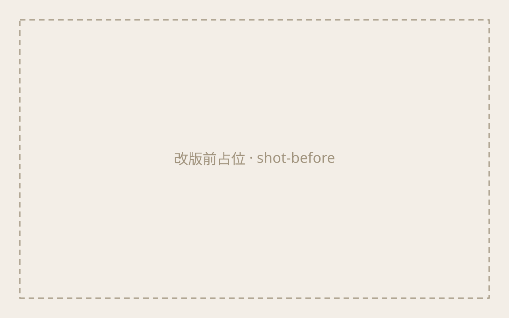
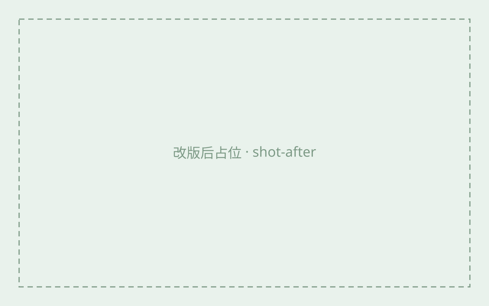

Before vs After · 对比
从「每次重做」到「一键起稿」
📉 过去
- 每次都要重新做封面、目录、结语
- 颜色、字号跨 slide 不一致
- 想换主题？手动改每一页
- 动效全靠 transition 硬写
- 截图导出还要一张一张截
→
📈 现在
- 复制模板、换数据、完事
- 所有页共享 tokens
- 按 T 循环切主题
- 25 个命名动效直接挑
- 一条 render.sh 全部出图
同段换标记：不加＝对照、mark=pc ✓✗ 利弊、mark=diff 旧→新
Before / After · 07
改版前后，一眼看见差别
改版前 · v2.4

信息密度高，重点不突出，首屏要滚动两屏才看到指标。
改版后 · v3.0

指标提到首屏，次要信息折叠，平均完成时长下降 38%。
两图对照。两侧务必用同一比例、同一拍摄/截图尺寸，否则观众看到的差别里混进了版式差别。结论写在图下一行，不要留给观众猜。
同段换标记：不加＝对照、mark=pc ✓✗ 利弊、mark=diff 旧→新